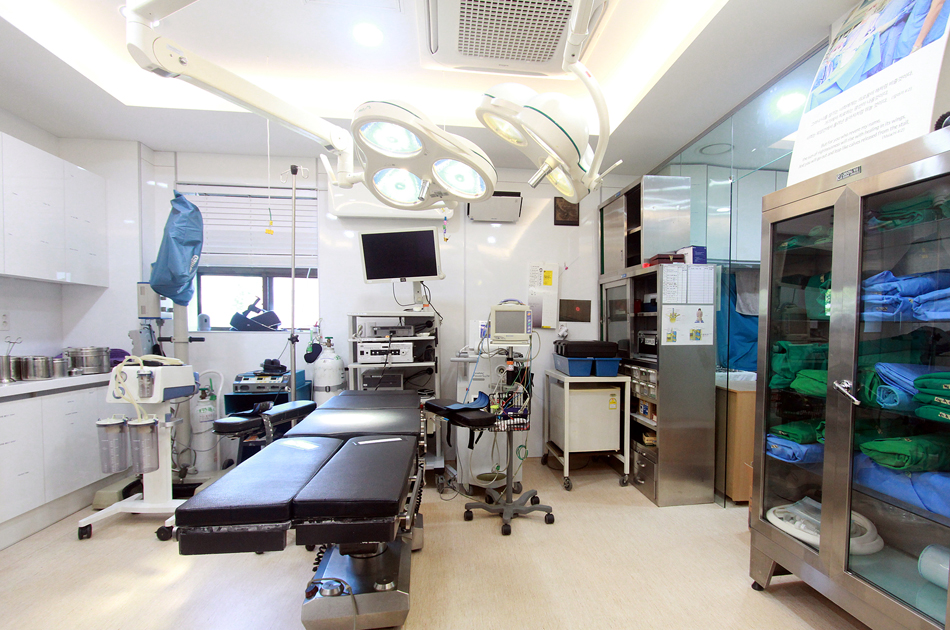

음경임플란트
약물치료에 반응하지 않는 발기부전의 근본적 해결을 돕는 수술적 치료로, Proctorship 경력의 박천진 대표원장이 집도합니다.
음경임플란트 작동 원리 및 수술 대상
인체공학적으로 고안된 실린더를 음경해면체에 삽입하고 음낭 내 발기조절펌프, 치골 뒷방광 아래 저장고를 위치시켜 펌프로 발기·이완을 조절합니다.
- 경구용 약물·주사제 치료 효과가 없는 경우
- 동맥경화증 등 혈관성 원인 / 오랜 기간 당뇨 합병증
- 심각한 음경만곡증 동반 발기부전
- 골반 내 장기·뼈 수술 및 신경계 질환 후유증
수술 전 준비 3종 및 수술 후 관리
- 수술 전 검사: 혈액검사(CBC), 강직도검사(성기능검사), 초음파검사(Ultrasound)
- 수술 후 관리: 수술 후 3일간 집중치료 내원(소변줄·배액관 제거 및 감염예방 소독·점검), 회복 시까지 흡연·음주·성관계 금지

3-Piece 팽창형 보형물
실린더·발기조절펌프·저장고로 구성되어 평상시 자연스러운 이완과 관계 시 단단한 발기 상태를 구현합니다. (비급여 안내: 1,500만 원)
굴곡형 보형물 (AMS Spectra)
수술 과정이 비교적 간결하고 손 조작이 불편한 경우에도 사용이 용이한 굴곡형 보형물입니다. (비급여 안내: 700만 원)
COMBI-OPERATION (3-Piece + HoLEP 동시치료)
전립선비대증으로 인한 배뇨장애와 약물 불응성 발기부전을 동시에 겪는 환자분을 위해, 3-Piece 음경임플란트와 HoLEP 전립선종 적출술을 한 번의 수술 및 회복 일정으로 통합 시행합니다.
